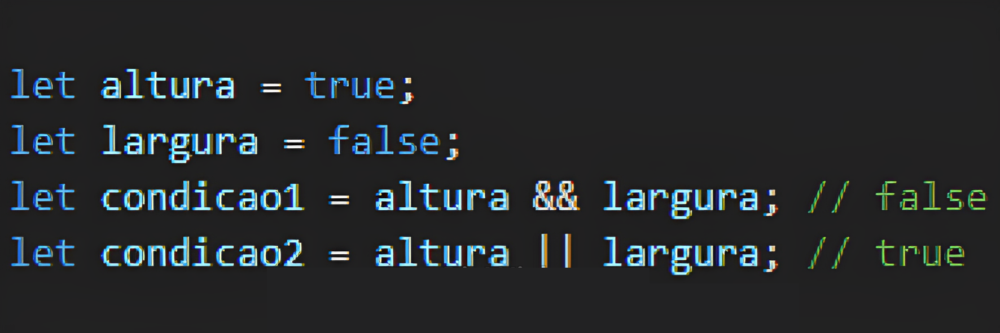
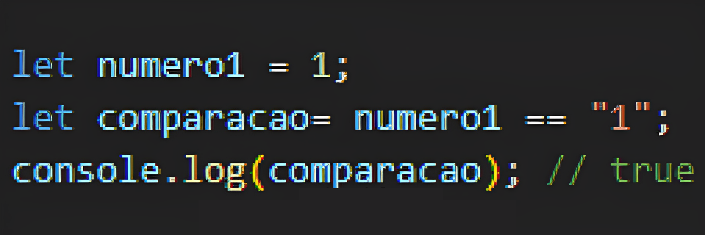
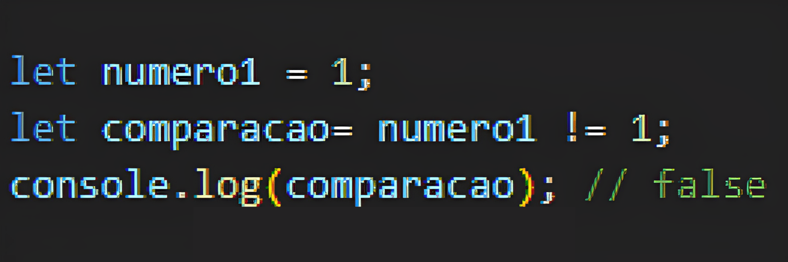
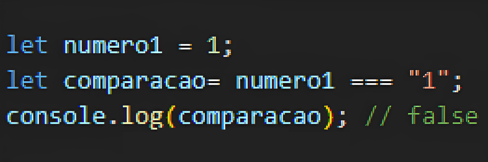
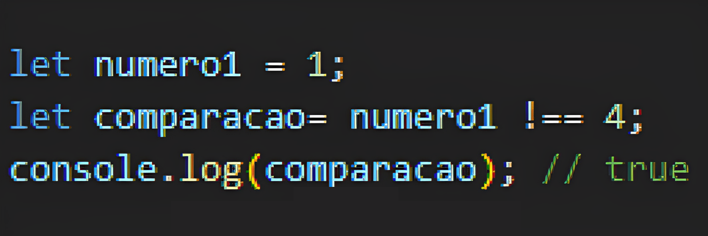

Boolean (Booleano)
Representa um valor lógico verdadeiro (true) ou falso (false). Exemplos:
- True
- False
O boolean será usado em condições no TypeScript. Confira a Lista de
Exercícios desse assunto e o uso do boolean nele.
Lembre-se que o "let" na declaração da variável pode ser substituído por const,
dependendo do seu uso futuro. Aprenda mais sobre a diferença de let e const clicando
aqui.
Operadores de comparação
Além dos operadores de comparação, TS
também possui operadores lógicos que permitem combinar ou negar valores booleanos.
Os principais operadores lógicos em TS são:
- && (E lógico): Retorna true se ambos os operandos forem true.
- || (OU lógico): Retorna true se pelo menos um dos operandos for true.
- ! (NÃO lógico): Inverte o valor de um operando booleano.

- Igualdade fraca ou abstrata (==): Compara e aceita dois valores iguais (até mesmo se estiverem
com tipos diferentes).

- Desigualdade fraca ou abstrata (!=): Retorna verdadeiro se os operandos forem diferentes.

- Igualdade estrita (===): retorna verdadeiro se os operandos forem estritamente os mesmos, ou seja,
se contiverem o mesmo valor e forem do mesmo tipo.

- Desigualdade estrita (!===): retorna verdadeiro se os operandos forem diferentes em valor e/ou
tipo.

Voltar para a página inicial